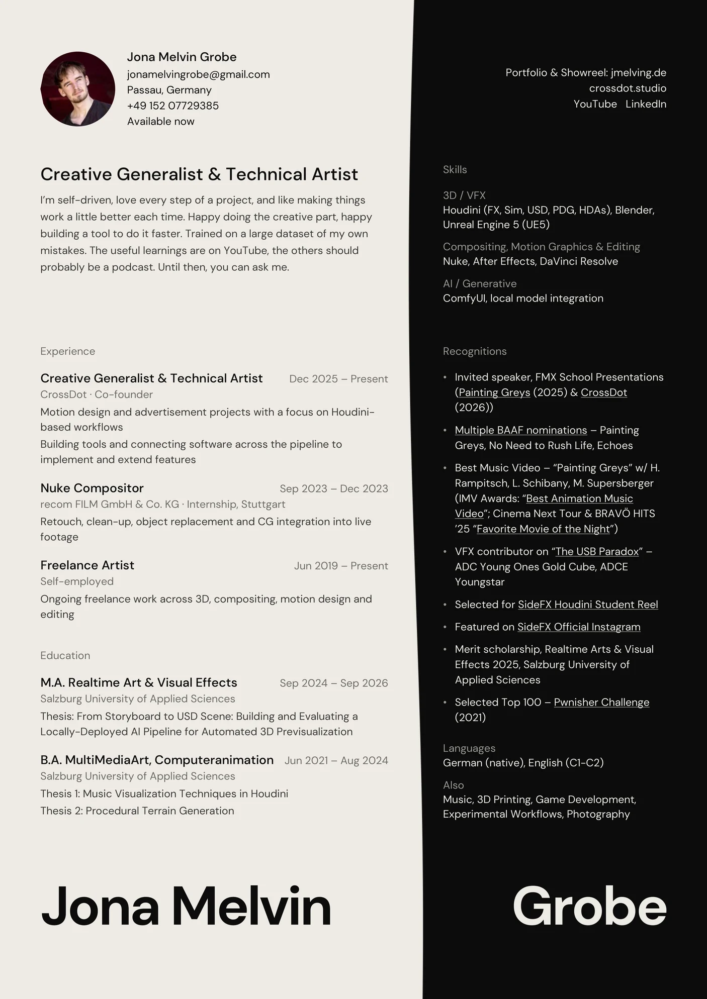
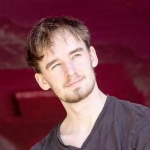

Creative Generalist & Technical Artist.
I’m self-driven, love every step of a project, and like making things work a little better each time. I’m just as comfortable in the technical details as in the creative ones.
“Done is better than perfect.”
Get in touch View CV↓ pull down for Curiosities
Selected
All projects →↑ pull up for Projects